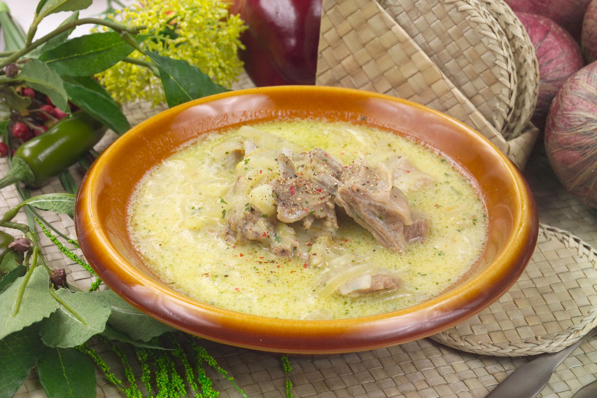
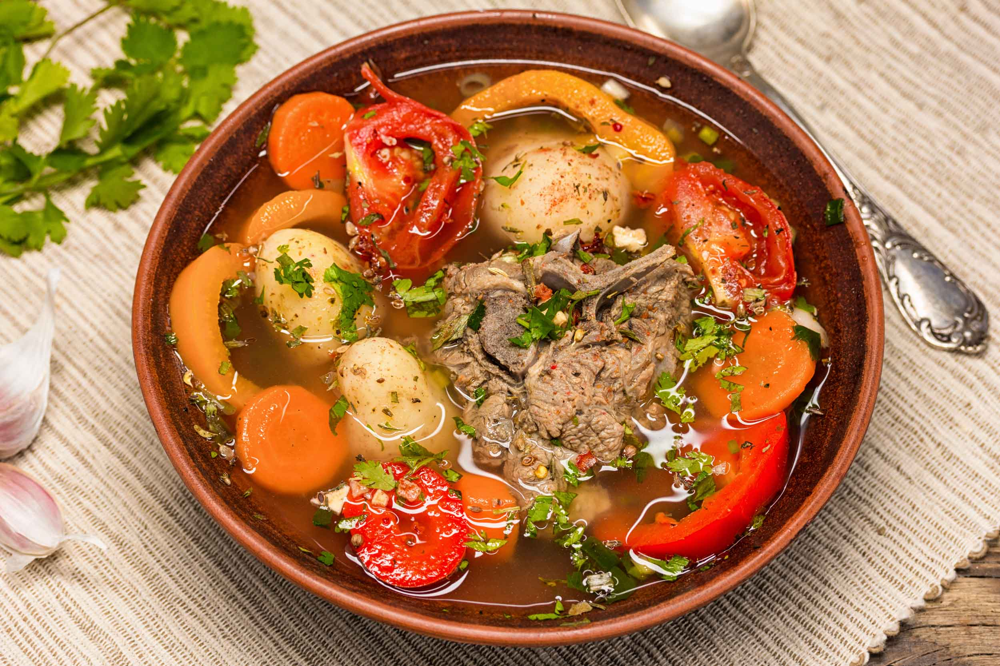

ЧИХИРТМА ИЗ БАРАНИНЫ

Ниже приведены рекомендации по рецепту и подаче.
Методы
На 500 г баранины
- 2 головки лука
- по 1 ст. ложке муки и масла
- 2 яйца
- 1/2 чайной ложки шафрана
- 2 ст. ложки уксуса
- Баранину обмыть холодной водой, нарезать небольшими кусками (из расчета 3–4 куска на порцию), положить в кастрюлю и поставить варить, снимая появляющуюся на поверхности пену.
- Сваренную баранину вынуть из кастрюли, а бульон процедить сквозь марлю или частое сито.
- Мелко нарезанный лук поджарить на масле, посыпать мукой, перемешать и еще раз прожарить. После этого в процеженный бульон положить сваренную баранину, поджаренный с мукой лук, добавить шафран, соль, перец и дать закипеть.
- Отдельно вскипятить светлый виноградный уксус и влить в суп, снова дать вскипеть, после чего кастрюлю снять с огня.
- Перед подачей к столу яичные желтки взбить в отдельной посуде, смешать с небольшим количеством бульона, влить в суп, размешать и подогреть, не доводя до кипения (чтобы желтки не свернулись), а затем посыпать суп зеленью киндзы.
ХАРЧО

Ниже приведены рекомендации по рецепту и подаче.
Методы
На 500 г мяса
- 2 головки лука
- 2–3 дольки чеснока
- 2 ст. ложки томата-пюре или 100 г свежих помидоров
- 1/2 стакана риса
- 1/2 стакана кислых слив
- Харчо готовят преимущественно из говяжьей грудинки, но можно ее заменить и бараньей грудинкой.
- Мясо обмыть, нарезать небольшими кусками из расчета 3–4 куска на порцию, положить в кастрюлю, залить холодной водой и поставить варить. Появляющуюся на поверхности пену снимать шумовкой.
- Через 1 1/2–2 часа положить мелко нарезанный лук, толченый чеснок, рис, кислые сливы, соль, перец и варку продолжать еще в течение 30 минут.
- Томат слегка поджарить на масле или жире, снятом с бульона, и за 5–10 минут до окончания варки добавить в суп.
- При подаче на стол посыпать мелко нарезанной зеленью киндзы, петрушки или укропом.
ШУРПА

Ниже приведены рекомендации по рецепту и подаче.
Методы
На 500 г говядины
- 2 головки лука
- 750 г картофеля
- 2 шт. моркови
- по 2 ст. ложки томата-пюре и масла
- Сварить мясной бульон. Лук нарезать в виде соломки и поджарить в разогретом жире.
- Мясо нарезать кусочками весом 25–30 г, обжарить, смешать с поджаренным луком, добавить морковь, нарезанную кубиками, томат-пюре и жарение продолжать в течение 5–б минут. Подготовленное таким образом мясо вместе с овощами переложить в кастрюлю, залить бульоном и довести до кипения. Затем положить картофель, нарезанный дольками, соль, перец и варить 15–20 минут.